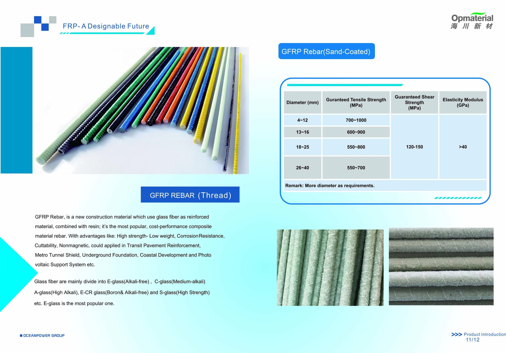
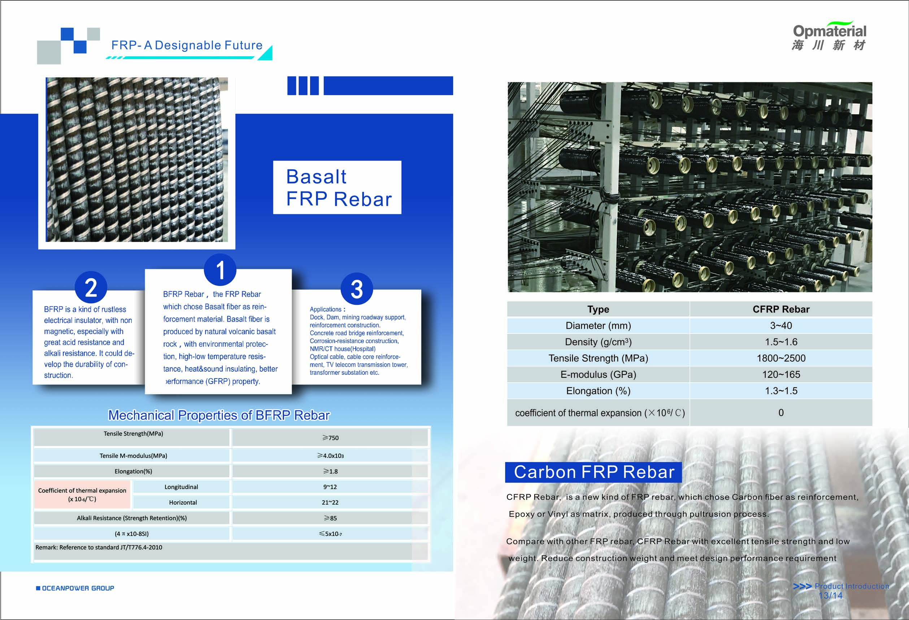
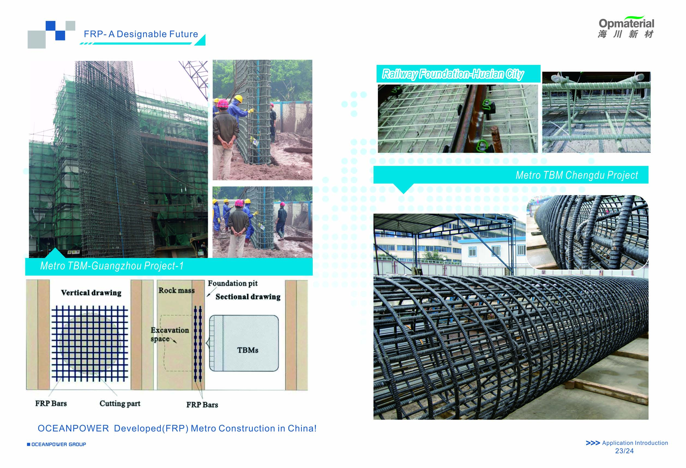

FRP REBAR SYSTEMS / EST. 1998
Built for the elements.
Advanced fiber-reinforced polymer reinforcement for the infrastructure that cannot afford corrosion, weight, or magnetic interference.
01Designable
future
future
GFRP · BFRP · CFRP
1998Group founded
4-40mm GFRP range
700-1000MPa tensile strength*
WHO WE ARE
Materials science for the real world.
Jiangsu Oceanpower New Material Technology Co., Ltd. was established in 2016 as part of Oceanpower Group, bringing the group’s R&D, production, design and service capability to the FRP sector.
From Jurong, Jiangsu, we supply reinforcement systems for demanding civil, transport and industrial environments worldwide.
Meet Oceanpower →PRODUCT PLATFORM
Reinforcement, re-engineered.
Three fiber systems. One goal: longer-lasting infrastructure with more freedom in design and construction.

02 / BASALT FIBER
BFRP Rebar
Durable, insulation-ready, acid and alkali resistantExplore applications →03 / CARBON FIBER
CFRP Rebar
High-strength reinforcement for exacting design requirementsView specifications →ENGINEERED PERFORMANCE
Specified with
confidence.
* Values shown are catalog values. Contact our team for project-specific technical data.
GFRP REBAR / SAND-COATEDMETRIC
DiameterGuaranteed tensile strengthGuaranteed shear strengthElasticity modulus
4-12 mm700-1000 MPa120-150 MPa> 40 GPa
13-16 mm600-900 MPa
18-25 mm550-800 MPa
26-40 mm550-700 MPa
Custom diameters available on request.
OCEANPOWER INTELLIGENCE
A faster path from project brief to the right reinforcement.
AI Sales Concierge
Demonstrates product, performance and application answers using Oceanpower’s draft catalogue content.
Smart Product Match
Qualifies the project environment, reinforcement type and target diameter to guide buyers to the best-fit system.
RFQ Brief Builder
Collects a provisional project brief for staff review without sending customer data.
Designed for a production connection to Oceanpower’s CRM and n8n sales workflow, with internal approval before any quote or customer-facing email is sent.
LIVE DEMO MODE
See the site through an overseas buyer’s eyes.
Choose a customer profile to launch a guided AI conversation. Each demo shows how Oceanpower can qualify a real project before sales follows up.
DISCOVER→QUALIFY→RECOMMEND→RFQ READY→SALES REVIEW

APPLICATION
IN THE FIELD
IN THE FIELD
WHERE IT WORKS
Designed around the toughest constraints.
Oceanpower FRP solutions have been implemented where corrosion, electrical conductivity, limited access and long service life are central to the brief.
- 01Metro and tunnel shield works
- 02Railway foundations and bridge decks
- 03Coastal development and marine structures
- 04Roadways, mining and foundation pits
START A CONVERSATION
Let’s reinforce
what’s next.
info@jsopmaterial.com ↗
No. 6, Guangming Scientific-pioneer Park,
Biancheng Town, Jurong City (Zhenjiang),
Jiangsu Province, China
Tel. 0086-87618886 / Fax. 0086-87618882